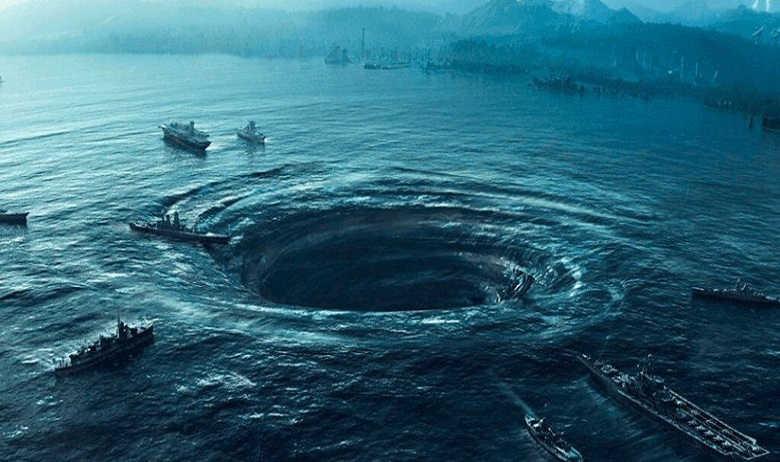

EVENTS
AIRCRAFT INCIDENT
1945:december 5, flight 19 five TBF avengers lost with 14 airmen and later same day PBM manier buno 59225
lost with 13 air men while searching for flight 19.
1947:july 3, a douglas c-54 crashed off florida coast
after the pilot lost control in turbulence.
1948: january 30, avro tudor G-AHNP star tigrer lost with six
crew and 27 passengers en route from santa maria airport in the azores to kindely field, bermuda.
1948: december 28, douglas DC-3 nc16002 lost with three crew and 36 passengers en route from san juan, puerto
rico, to miami, florida.
1949: january 17,Avro TudorG-arge star areil lost withh 7 crew and 13 passengers
en route from kindely field, bermuda, to kinston airport, jamica.
1949:november 16,a B-29 [42-65289] (2nd
bomb sq ) dicthed in the atlantic . two crewmen were missing but three days later 18 survivors were rescued 385
miles northeast of bermuda.
1956: november 9, a martin ,arlin (VP-49) lost with 10 crewmen taking off
from bermuda.
1962: january 8, a USAF KB-50 51-0465(427th AR SQ) was lost over the atlantic between the
US East coast and the azores.
1965: june 9, A USAF C-119 flying boxcar of the 440th troop carrier wing
missing between florida and grand turk island the last call from the plane came from a point just north of
crooked island Bahamas, and 177 miles from grand turk island. on july 18, 1965 debris from the plane was found
on the beach of Gold rock cay just off the northern shore of ackilins island.
INCIDENT AT SEA
1492:october 11, christopher columbus and the crew of santa Maria reported seeing unknown light one day
before the landing at Guanahani.
1800: USS Pickering, on course from guadeloupe to daleware,
lost with 90 people on board (possibly lost in a gale).
1814:USS Wasp, last known position was the
caribbean, lost with 140 people on board (possibly lost in the storm).
1824: USS Wild cat, on
course from cuba totompkins island ,lost with 14 people (lost in a gale with 31 on board)